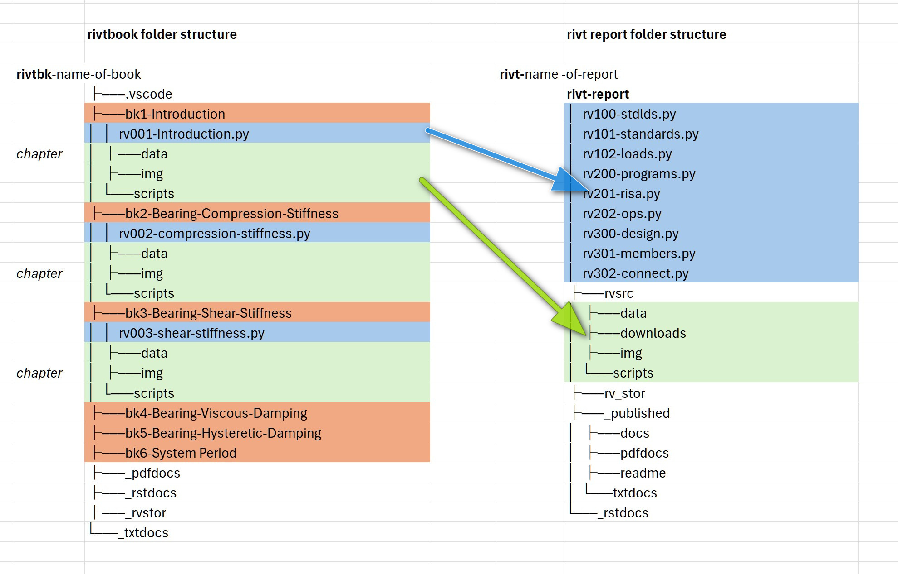

C.3 | Folders#
[1] rivt Folders#
Summary of rivt files and folders
| A rivt file is a Python file file that imports the
rivt file | rivtlib Python package and compiles to a text,
| PDF or HTML doc.
| A file supplied by an author that rivt integrates
source file | into a doc - including script, image, data, formulas
| and markup file types.
| A rivt project folder contains setting and
rivt project folder | configuration files for the IDE and version control,
| as well as one or more rvbook or rvreport folders.
| A rivtbook folder is a collection of rivt files with
rvbook subfolder | common subject matter organized to simplify selection
| selection of files and resources for inclusion in rivt
| A rivt report folder is a collection of rivt files
rvreport subfolder | organized for publication of rivt docs and reports
| as text, html or PDF files.
Reports are organized using the folllowing required folders and subfolders:
containing folder
rivt- project-label
configuration and environment files for the project
top-level folders
folders include public, report and handbook folders
- _rvpublic- report-label
Includes public rivt files designated by the author and written by rivtlib for public sharing. The prefix rvXnn- is changed to rv-Xnn- to avoid confusion with non-public files.
- rvreport- report-label
Includes files and folders for publishing docs and reports.
- rvbook- handbook-label
Includes handbook files and folders.
second level folders
Folders with leading hyphens are written by rivtlib. Foldes with internal hyphens are written and read by rivtlib. Folders with no hyphens are authored by the user.
- rvsrc
Includes author provided source files used by rivt files including data, images, run commands, tools and value files.
rv_stor Includes output files written by rivtlib including logs, values, hidden sections and metadata that may be read by other rivt files.
- _published
Formatted docs and reports written by rivtlib for publication. Subfolders include docs (HTML), pdfdocs (PDF) and txtdocs (text).
- _rstdocs
Intermediate restructured text files written by rivtlib.
[2] Project Folders#
A typical project folder structure is shown below. The required rivt file names and prefixes are shown in brackets.
[rivt-]project-Label/ project folder
├── .help/ help files
├── .vscode/ optional VSCode settings
├── .git optional git repository
├── README.txt rivt-generated text report
├── [_rvpublic-reptlabel]/ rivt-generated public files
├── [rvreport-reptlabel]/ report folder
├── [rivt-report]-1.py report generating script
├── [rv101-]filename1.py rivt file
├── [rv102-]filename2.py rivt file
├── [rv201-]filename3.py rivt file
├── [rvsrc]/ author provided files and folders
├── [rv_stor]/ rivt-generated source files
├── [_published]/ rivt-published docs and reports
└── [_rstdocs]/ rivt-generated rst files
├── [rivtbk-]book-label/ handbook folder
├── [_rstdocs]/ rivt-generated rst files
├── [_pdfdocs]/ pdf docs and rivtbook report
├── [_rv_stor]/ rivt-generated source files
├── [bk1-]chapter name/ chapter folder
├── [bk2-]chapter name/ chapter folder
└── [bk3-]chapter name chapter folder
[3] Report Folders#
A typical report folder structure is shown below. The required rivt file names and prefixes are shown in brackets. For the rivtbook folder structure see here.
A report folder can contain any file or folder but the following structure is required for doc processing. report folders include at least the folders and files with prefixesshown in brackets[] below. Folders with an underscore contain rivt generated files. Files and folders are organized under a rivt root folder with the prefix rivt- followed by the report label, e.g. rivt-Report-Label.
A new report folder is typically started by copying and editing a similar folder. rivt-folder examples can be downloaded at Google Drive.
[4] Handbook Folders#
A handbook collects rivt files sharing a common theme under a folder structure that allows direct copy and paste into rivt docs and reports. Its primary purpose is as an organized collection of files that can be directly selected and copied/merged as shown in the diagram below.


A rivtbook may be printed as a PDF, txt and README.txt file for review and exploration by using the rivtbook-report.py script.
A typical rivtbook folder structure is shown below. The required rivt file names and prefixes are shown in brackets. For the report folder structure see see.
Folder Naming
A rivtbook folder can contain any file or folder but the following structure is
required for rivtbook processing. rivtbook folders include at
least the folders and files shown in brackets[] below. Folders with an
underscore contain rivt generated files. Files and folders are organized under
a rivtbk root folder with the prefix rivtbk- followed by the
rivtbook label, e.g. rivtbk-Book-Label.
A new rivtbook folder is typically started by copying and editing a
similar folder. Several rivt-folder examples can be downloaded at
openmodels.info.
rivtbooks are organized to simplify selection of rivt files for inclusion in rivt docs and reports. Typical use involves the following steps. To insert a rivtbook subdivision into a rivt doc or report:
Copy the rivt file within a rivtbook subdivision folder to the rivt-report folder of the target report or doc and edit the rivt doc number.
Within the same subdivision folder copy all resource files and folders and paste (merge) them into the rvsrc folder of the target report or doc. A single copy and paste command will merge all of the required files.
The subdivision from the book is now inserted as a subdivision in the report, where further edits can be made.
[5] Complete Structure#
[rivt-]project-Label/ project folder
├── .help/ help files
├── .vscode/ optional VSCode settings
├── .git optional git repository
├── README.txt rivt-generated text report
├── [_rvpublic-reptname]/ rivt-generated public files
├── rvsrc/ author source files
├── rv-101-filename1.py public rivt file
├── rv-102-filename2.py public rivt file
├── rv-201-filename3.py public rivt file
...
├── [rvreport-reptname]/ report folder
├── [rivt-report]-1.py report generating script
├── [rv101-]filename1.py rivt file
├── [rv102-]filename2.py rivt file
├── [rv201-]filename3.py rivt file
...
├── [rvsrc]/ author provided files and folders
├── [data]/ tables
└── steel-vals.csv
├── [downloads]/ files to download
└── conc-vals.txt
├── [img]/ images
├── favicon.png
├── covlogo1.png
└── runlogo1.png
├── [scripts]/ scripts
├── beam1.py
└── text.rst
├── tools/ OS shell commands
└── opensees.sh
├── fig1.png
└── fig2.jpg
├── [rv_stor]/ rivt-generated source files
├── [logs]/ log files
├── rv101-log.txt
└── rv102-log.txt
├── [sect]/ sections not printed
├── rv202-5d.txt
├── rv103-4t.txt
└── rv301-2r.txt
├── [temp]/ temp files
└── rv101-label3.tex
├── output.dat
├── v101-2.csv
└── v102-3.csv
├── [_published]/ rivt-published docs and reports
├── [docs]/ html docs
├── html auxiliary folders
├── index.html
├── rv101-filename1.html
├── rv102-filename2.html
├── rv201-filename3.html
...
├── [pdfdocs]/ pdf docs
├── pdf auxiliary folders
├── report-title.pdf
├── rv101-filename1.pdf
├── rv102-filename1.pdf
├── rv201-filename3.pdf
...
└── [txtdocs]/ text docs
├── report-title.txt
├── rv101-filename1.txt
├── rv102-filename1.txt
├── rv201-filename3.txt
...
└── [_rstdocs]/ rivt-generated rst files
├── _downloads/
├── _static/
├── rv101-filename1.rst
├── rv102-filename2.rst
├── rv201-filename3.rst
...
[rivtbk-]book-Label/ rivtbook report folder
├── [_rstdocs]/ rivt-generated rst files
├── _downloads/
├── _static/
├── rv101-filename1.rst
├── rv102-filename2.rst
├── rv201-filename3.rst
...
├── [_pdfdocs]/ pdf docs and rivtbook report
├── pdf auxiliary folders
├── report-title.pdf
├── rv101-filename1.pdf
├── rv102-filename1.pdf
├── rv201-filename3.pdf
└── [_rv_stor]/ rivt-generated source files
├── [logs]/ log files
├── rv101-log.txt
└── rv102-log.txt
├── [sect]/ sections not printed
├── rv202-5d.txt
├── rv103-4t.txt
└── rv301-2r.txt
├── [temp]/ temp files
└── rv101-label3.tex
├── [vals]/ values files
├── v101-2.csv
└── v102-3.csv
└── output.dat
├── [bk1-]folder name rivtbook chapter folder
├── [rv001-]filename1.py rivt file
├── [downloads]/ files to download
└── conc-vals.txt
├── [img]/ page layout images
├── favicon.png
├── covlogo1.png
├── runlogo1.png
└── fig1.png
├── [data]/ tables and values
└── steel-vals.csv
├── v101-2.csv
└── v102-3.csv
├── [scripts]/ scripts
├── beam1.py
└── text.rst
└── tools/ OS shell commands
└── opensees.sh
├── [bk2-]folder name rivtbook chapter folder
...
└── [bk3-]folder name rivtbook chapter folder
...